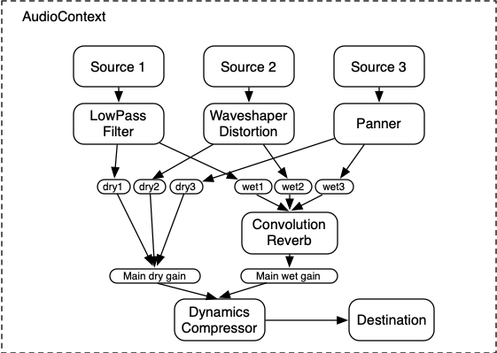
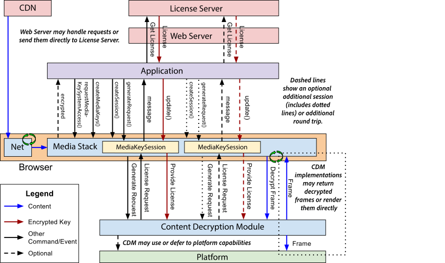
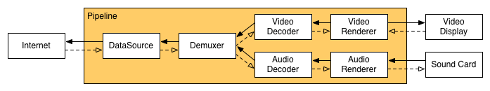

00 · 전체 지도
데스크톱 Chrome과 무엇이 다른가, 그리고 미디어 한 번 재생이 어떤 프로세스들을 가로지르는가.
이 브라우저는 그림은 GStreamer가 Wayland 화면에 직접 그리고, 소리는 차량 오디오 포커스가 중재하며, 곡 정보는 PickNow로 헤드유닛에 올린다. Chromium은 "엔진+껍데기"만 제공하고, 실제 미디어는 차량 HW로 빠져나간다.
데스크톱 Chrome과의 결정적 차이 4가지
이 4가지만 잡으면 나머지 모든 코드가 "왜 이렇게 생겼는지" 풀립니다.
| 주제 | 데스크톱 Chrome | 이 차량 브라우저 (brs_143) | 왜? |
|---|---|---|---|
| 디코딩 | Chromium 내부 디코더(ffmpeg) | GStreamer 외부 파이프라인이 전담 | NVIDIA HW 디코더 · 차량 오디오 HAL |
| 비디오 표시 | GPU 합성기가 프레임을 그림 | Video Hole — Wayland IVI 서피스에 직접 그리고 브라우저는 "구멍"만 뚫음 | HW 오버레이 성능 · 합성 우회 |
| 오디오 믹싱 | OS가 알아서 섞음 | Audio Focus + stream-id로 누가 스피커를 쓸지 직접 중재 | 내비·라디오·웹앱 충돌 방지 |
| 미디어 세션 | 브라우저 UI에만 표시 | PickNow로 곡정보·재생상태·썸네일을 헤드유닛에 전송 | 클러스터/센터 디스플레이 연동 |
미디어가 가로지르는 3개 프로세스
flowchart LR
subgraph R["🟦 Renderer 프로세스"]
JS["JS #lt;video#gt; / #lt;audio#gt; / AudioContext"] --> HME["HTMLMediaElement"]
HME --> WMP["WebMediaPlayerImpl"]
WMP --> PIPE["Pipeline / MojoRenderer"]
EXT["Obigo Extension
(웹앱 기능층)"]
end
subgraph M["🟪 Media Service 프로세스"]
RIMPL["RendererImpl"] --> GST["GStreamerRendererImpl
(디코딩·sink)"]
GST --> HV["hvideosink"]
GST --> HA["haudiosink"]
end
subgraph B["🟩 Browser / 🟧 외부"]
HMI["VideoManager · AudioFocus · PickNow"]
WL["Wayland 컴포지터 (IVI)"]
SPK["차량 스피커 / HW 디코더"]
end
PIPE == "mojo IPC (프로세스 경계)" ==> RIMPL
HV --> WL
HA --> SPK
EXT --> HMI
HMI --> WL
"이 가이드 읽는 법"
각 섹션은 ① 쉬운 비유 → ② 다이어그램(흐름·시퀀스) → ③ 코드 레퍼런스(접기) → ④ 매크로·디버깅 순서입니다. 코드 레퍼런스의 줄번호는 현재 트리 기준 앵커이며 코드가 바뀌면 어긋날 수 있으니, 정확히는 심볼 이름으로 검색하세요.
미디어 패치가 사는 곳 (파일 분포)
Video Hole 마이그레이션 분석 당시 집계한, OBIGO_USE_VIDEO_HOLE 가드가 퍼져 있던 Chromium 트리 분포입니다. 미디어 코드가 어디에 있는지 감을 줍니다.
pie showData
title 미디어/비디오홀 패치 파일 분포 (≈120 파일)
"media/" : 29
"obigo/ (extension)" : 18
"content/" : 15
"blink/" : 14
"cc/" : 9
"viz/" : 5
01 · 비디오 & Video Hole
<video>가 화면에 뜨기까지. 제어 신호는 GStreamer까지 내려가고, 그림은 Wayland 서피스에 직접 그려진다.
브라우저는 벽에 투명한 액자(구멍)만 걸어둡니다. 실제 영상 그림은 그 구멍 뒤에서 GStreamer가 차량 화면(Wayland)에 직접 칠합니다. 그래서 브라우저는 "여기에 비디오가 있다"는 위치만 알려주면 됩니다.
제어 신호 경로 (play → GStreamer)
flowchart TD A["HTMLMediaElement::PlayInternal()
→ UpdatePlayState()"]:::r --> B["WebMediaPlayerImpl::Play()
SetPlaybackRate()"]:::r B --> C{"RendererImplFactory
::CreateRenderer()"}:::r C -->|"OBIGO_USE_GSTREAMER_RENDER"| D["GStreamerRendererImpl 주입"]:::m D --> E["InitializeGStreamer()
appsrc → decodebin → sink"]:::m E --> F["NewVideoAdded()
해상도 추출 · sink 연결"]:::m F --> G["GStreamerVideoHole
::SetVideoSurfaceId()"]:::m G --> H["g_object_set(sink, 'ivisurface-id', id)"]:::w H --> I["Wayland 컴포지터가
서피스에 영상 합성"]:::w classDef r fill:#1e3a5f,stroke:#3b82f6,color:#fff; classDef m fill:#3b1e5f,stroke:#a855f7,color:#fff; classDef w fill:#5f3f1e,stroke:#f59e0b,color:#fff;
첫 프레임이 뜨는 순간 (시퀀스)
sequenceDiagram
autonumber
participant JS as JS (웹앱)
participant BL as HTMLMediaElement
participant WMP as WebMediaPlayerImpl
participant GST as GStreamerRendererImpl
participant VM as VideoManager (extension)
participant WL as Wayland IVI
JS->>BL: video.play()
BL->>WMP: UpdatePlayState() → Play()
WMP->>GST: SetPlaybackRate / Initialize
GST->>GST: decodebin이 video pad 생성
GST->>GST: NewVideoAdded() · 해상도 추출
VM->>VM: createVideoWindow() · generateSurfaceId()
VM->>WMP: setVideoSurfaceID(id) ★누락 단골 버그
WMP->>GST: SetVideoSurfaceId(id)
GST->>WL: g_object_set(sink,'ivisurface-id',id)
GST->>GST: BUFFERING_HAVE_ENOUGH (preroll 완료)
GST->>WL: 첫 프레임 합성 → 화면 표시
Video Hole이란?
일반 Chrome은 디코드한 비디오 프레임을 GPU 합성기가 다른 UI와 함께 그립니다. 여기서는 다릅니다:
- CC 레이어(
VideoLayerImpl)는 비디오 자리에 투명한 구멍만 그립니다 (SkBlendMode::kSrc로 펀칭). - GStreamer의
hvideosink가 그 자리에 대응하는 Wayland IVI 서피스에 디코드된 프레임을 직접 올립니다. - 컴포지터가 "브라우저 UI(구멍 뚫린) + 비디오 서피스"를 겹쳐 최종 화면을 만듭니다.
setVideoRect / applyRawVideoRect 경로로 헤드유닛에 계속 알려줍니다.서피스 ID 발급과 그 유명한 버그
setVideoSurfaceID() 호출 한 줄이 빠져서, GetVideoWindow()가 0을 반환 → IVI subsurface 미생성 → 영상이 안 보임. OBIGO_USE_VIDEO_HOLE && USE_WAYLAND_IVI_SHELL 게이트라 컴파일 에러가 안 나서 런타임에야 드러남. MOBIS 미디어 회귀 진단 1번 = mtx 경로와 1:1 대조.📂 코드 레퍼런스 — 비디오 경로 10개 앵커
핵심 매크로
OBIGO_USE_GSTREAMER_RENDER · OBIGO_USE_NATIVE_RENDER · OBIGO_USE_VIDEO_HOLE · USE_WAYLAND_IVI_SHELL · MOBIS_NVIDIA · ARCH_CPU_ARM_FAMILY
OnBufferingStateChange의 BUFFERING_HAVE_ENOUGH에서 OnVideoSurfaceCreated가 발화되는지 확인(PAUSED preroll 완료 시점). 위치가 어긋나면 gstreamer_video_hole.cc의 SetVideoRect 로그 추적.02 · 오디오 · 9-hop · Audio Focus
소리가 차량 스피커로 나가기까지. 설정값은 9계층을 타고 내려가고, 처음엔 일부러 "가짜 스피커"에 물려둔다.
오디오 설정은 9명이 손에서 손으로 쪽지를 전달하듯 내려갑니다(한 명이라도 안 넘기면 무음). 그리고 소리는 처음엔 가짜 스피커(fakesink)에 연결돼 안 들리다가, 차량 오디오 포커스를 얻은 순간 진짜 스피커(haudiosink)로 갈아끼워집니다.
9-hop setter chain
SetAppId / SetSourceType / SetAudioSourceStatus 가 이 9계층을 순차 전달됩니다.
sequenceDiagram
autonumber
participant HME as HTMLMediaElement
participant WMP as WebMediaPlayerImpl
participant PC as PipelineController
participant PI as PipelineImpl(RendererWrapper)
participant DR as DecryptingRenderer
participant MW as MojoRendererWrapper
participant MR as MojoRenderer
participant RI as RendererImpl
participant GR as GStreamerRendererImpl
HME->>WMP: SetAppId(id)
WMP->>PC: SetAppId(id)
PC->>PI: SetAppId(id)
PI->>DR: SetAppId(id)
DR->>MW: SetAppId(id)
MW->>MR: SetAppId(id)
Note over MR,RI: ══ mojo IPC 프로세스 경계 ══
MR->>RI: remote_renderer_->SetAppId(id)
RI->>GR: nm_renderer_->SetAppId(id)
GR->>GR: gst_audio_sink_->SetAppId(id)
fakesink → haudiosink 전환 (Audio Focus 게이트)
flowchart TD A["AddDefaultAudioSink()
audioconvert→audioresample→volume→fakesink"]:::m --> B["재생 시작
(소리는 안 남, 버퍼링만)"]:::m B --> C{"SwitchToActualAudioSinkImpl()
port::Audio::hasAudioFocus(appId)?"}:::m C -->|"포커스 없음"| D["fakesink 유지 = 무음"]:::dim C -->|"포커스 있음"| E["fakesink 제거 → haudiosink 생성"]:::b E --> F["g_object_set(sink,'stream-id',N)
(source_type 파싱, 기본 122)"]:::b F --> G["차량 오디오 HAL → 스피커"]:::b classDef m fill:#3b1e5f,stroke:#a855f7,color:#fff; classDef b fill:#1e5f33,stroke:#22c55e,color:#fff; classDef dim fill:#21262d,stroke:#444,color:#9da7b3;
stream-id는 차량 오디오 HAL의 출력 경로(어느 채널/존)를 가릅니다. WebAudioManager가 mojo로 browser AudioManager에 물어 device_name을 받고 거기서 stream id를 뽑습니다.
동시 재생은 누가 이기나 (Audio Focus)
sequenceDiagram
participant Nav as 내비 (app:nav)
participant Web as 음악 웹앱 (app:music)
participant AFM as AudioFocusManager
Nav->>AFM: requestAudio()
Web->>AFM: requestAudio()
AFM->>AFM: 승자 1명 결정 (active = nav)
Note over Web: hasAudioFocus(music)=false → fakesink 유지(무음)
Note over Nav: hasAudioFocus(nav)=true → haudiosink(소리)
Web->>AFM: 사용자가 music 탭 활성화
AFM->>AFM: active = music 로 전환
Note over Nav: 포커스 상실 → fakesink (음소거)
Note over Web: 포커스 획득 → haudiosink (소리 시작)
📂 코드 레퍼런스 — 오디오 경로 9개 앵커
핵심 매크로
OBIGO_WS_AUDIO_MANAGER (현행) · OBIGO_AUDIO_MANAGER (구) · OBIGO_USE_MEDIA_SERVICE · MOBIS_NVIDIA · MOBIS_DOLPHIN3
#if OBIGO_AUDIO_MANAGER outer 가드를 풀 때 안의 nested inner 가드 코드까지 함께 지우면 71+ 파일에서 audio routing이 끊깁니다. inner 코드는 보존해야 합니다.03 · WebAudio
new AudioContext()로 만든 소리. <audio> 태그와 완전히 다른 길로 나간다 — blink이 직접 그래프를 렌더링한다.
<audio>가 "녹음된 음원을 트는 것"이라면, WebAudio는 "신디사이저로 실시간 연주하는 것"입니다. 그래서 디코더·GStreamer를 거치지 않고, blink이 매 순간 노드 그래프를 계산(pull)해 platform sink로 바로 흘려보냅니다.
표준 WebAudio 모듈 라우팅 (W3C)
WebAudio는 AudioNode들을 연결한 그래프입니다. 소스(Oscillator/BufferSource) → 효과(Gain/Filter/Convolver) → destination으로 흐릅니다.

실제 렌더 경로 (pull 방식)
flowchart LR JS["JS: Oscillator → Gain → ctx.destination"]:::r --> RH["RealtimeAudioDestinationHandler::Render()
오디오 스레드 · 128샘플/quantum"]:::r RH --> AD["AudioDestination (platform/audio)"]:::r AD --> OUT["오디오 출력 장치"]:::b RH -. "선택적 상태 동기화" .-> WAM["WebAudioManager (mojo)"]:::r classDef r fill:#1e3a5f,stroke:#3b82f6,color:#fff; classDef b fill:#1e5f33,stroke:#22c55e,color:#fff;
MediaElement 오디오 vs WebAudio — 헷갈리는 핵심
| 항목 | HTMLMediaElement <audio> | WebAudio (AudioContext) |
|---|---|---|
| 시작점 | <audio src> 태그 | new AudioContext() |
| 코드 경로 | 9-hop → GStreamer (섹션 02) | blink 내부 그래프 렌더 |
| 소스 타입 | kAudioSourceMain | kAudioSourceNoAudio (1000) |
| 렌더 방식 | push (디코더가 밀어냄) | pull (매 quantum 당겨감) |
| 차량 오디오 포커스 | 받음 | 기본 비포커스(백그라운드 가능) |
Obigo 패치
AudioContext에 차량 오디오 매니저와 엮을 멤버가 추가됐습니다: audioManager_, media_id_, stream_id_, extra_data_. 필요 시 WebAudioManager를 통해 차량 포커스에 상태를 동기화합니다.
📂 코드 레퍼런스 — WebAudio 5개 앵커
04 · CDM · DRM (Widevine)
Watcha·Netflix 같은 암호화 영상. EME로 CDM을 띄워 라이선스를 받고, 격리된 프로세스에서 복호화한다.
암호화 영상은 잠긴 금고입니다. JS(EME)가 열쇠(라이선스)를 라이선스 서버에서 받아오고, 실제 금고 해제는 보안상 격리된 방(sandbox CDM 프로세스)의 Widevine이 합니다. 해제된 영상만 GStreamer 디코더로 넘어갑니다.
표준 EME 스택 (W3C)

라이선스 교환 시퀀스
sequenceDiagram autonumber participant JS as JS (웹앱) participant EME as EME (blink) participant CDM as Widevine CDM
(sandbox 프로세스) participant LS as License Server JS->>EME: requestMediaKeySystemAccess("com.widevine.alpha") Note over JS: video 재생 → "encrypted" 이벤트(initData) JS->>EME: session.generateRequest("cenc", initData) EME->>CDM: 세션 생성 요청 CDM-->>JS: OnSessionMessage(라이선스 요청) JS->>LS: POST 라이선스 요청 LS-->>JS: 라이선스 응답 JS->>EME: session.update(license) EME->>CDM: 키 설치 CDM-->>JS: OnSessionKeysChange(usable) Note over CDM: 이후 Decrypt() → GStreamer 디코더 → 화면
프로세스 모델 (정확히)
flowchart LR
subgraph R["🟦 Renderer 프로세스"]
EME2["EME modules
(encryptedmedia/)"]
ADP["CdmSessionAdapter
(platform/media)"]
DEC["GStreamerMediaDecoder
cdm_context_->GetDecryptor()"]
EME2 --> ADP
end
subgraph C["🟥 CDM utility 프로세스 (sandbox)"]
PW["PluginForWideVine"]
WR["PluginForWideVineWrapper
libc++ ↔ libstdc++ ABI 격리"]
WV["Widevine CE CDM"]
PW --> WR --> WV
end
ADP == "mojo" ==> PW
DEC == "복호화 요청" ==> PW
CdmSessionAdapter는 Renderer에 있고, 실제 Widevine 라이브러리는 별도 샌드박스 CDM 프로세스에서 돕니다. 둘은 mojo로 통신.Obigo의 핵심 커스터마이즈
- 경로 환경변수화:
OBIGO_W_CDM_DIR,OBIGO_AF_DIR로 CDM.so·매니페스트 위치 지정 (표준 Chrome은 번들/컴포넌트 업데이터). - ABI 격리 wrapper: Widevine CE CDM은
libstdc++(sizeof std::string=32), Obigo는libc++(=24).plugin_for_widevine_wrapper+event_listener_wrapper(15.3/16.4)가 메모리 레이아웃을 맞춰 충돌을 막습니다 — GWUR-71의 진짜 해법. - 샌드박스:
bpf_cdm_policy_linux.cc에서dlopen·네트워크 syscall 허용(OBIGO_DRM_WIDEVINE).
std::string을 다른 크기로 본다. wrapper 없이 직접 호출하면 메모리가 어긋나 복호화가 깨진다.📂 코드 레퍼런스 — CDM/DRM 8개 앵커
핵심 매크로
OBIGO_DRM_WIDEVINE · ENABLE_LIBRARY_CDMS · WIDEVINE_CDM_15_3 / WIDEVINE_CDM_16_4
05 · Obigo 익스텐션 · PickNow
웹앱 미디어가 차량 헤드유닛 화면에 곡 정보·재생상태·썸네일로 뜨기까지.
웹앱이 노래를 틀면, 비서(익스텐션)가 곡 제목·아티스트·재생상태를 받아적어, 차량 전광판(PickNow → 헤드유닛)에 띄웁니다. 동시에 AudioFocusManager가 "누가 스피커를 쓸지" 교통정리를 합니다.
연동 체인
flowchart TD W["웹앱 미디어 이벤트
(MediaSession API)"]:::r --> AC["AudioClient
(interface/audio)"]:::b AC --> AP["AppPolicy → BookmarkPolicy
onMediaSessionMetaDataChanged 등"]:::b AP --> MSM["MediaSessionManager
app_id별 세션·메타데이터 저장"]:::b MSM --> PN["port::PickNow
notifyMetaData / Image / Status"]:::b PN --> HMI["WebCommonHmi::setPopupPlayerData(JSON)"]:::w HMI --> HU["차량 헤드유닛 HMI"]:::w classDef r fill:#1e3a5f,stroke:#3b82f6,color:#fff; classDef b fill:#1e5f33,stroke:#22c55e,color:#fff; classDef w fill:#5f3f1e,stroke:#f59e0b,color:#fff;
PickNow가 보내는 JSON
PickNow는 메타데이터를 JSON으로 직렬화해 setPopupPlayerData()로 헤드유닛에 보냅니다.
{ "command": "metadata",
"data": { "category": "music", "title": "Dynamite", "artist": "BTS" } }
{ "command": "playstate",
"data": { "play_state": "playing", "availability": true } }
{ "command": "actions",
"data": { "actions": ["play", "pause", "next", "previous"] } }
{ "command": "imagechanged",
"data": { "hasImage": true } }MOBIS_CCNC vs MOTREX_CCNC — 같은 기능, 다른 인터페이스
| 항목 | MOBIS (ccnc/) | MOTREX (mtx/) |
|---|---|---|
| 재생상태 전달 | notifyMediaSessionInfoChanged(string) | notifyPlaybackStatusChanged(enum) |
| 재생상태 표현 | 문자열 ("playing"/"paused") | MediaSessionPlayState enum |
| 썸네일 | notifyImageChanged(bool) 단일 | notifyImageUrl() + notifyImageDownloadComplete() |
| 앱ID | "uplustvweb" 하드코딩(TODO) | "ccos.hmi.picknowweb..." |
| 오디오 포커스 | 앱ID당 1소스 | 화면(센터/뒷좌석) × 소스 다중 |
📂 코드 레퍼런스 — 익스텐션 · PickNow 7개 앵커
10 · 생성 → GStreamer → 재생 라이프사이클
<video> 요소가 만들어지는 순간부터 GStreamer 파이프라인이 PLAYING이 되기까지, 큰 단계(category)별로 어떤 클래스가 등장하고 무슨 일을 하는가.
크게 6단계입니다: ① 요소·리소스 선택 → ② WebMediaPlayer 생성·로드 → ③ Demuxer·Pipeline 시작 → ④ 메타데이터·Renderer 생성(GStreamer 주입) → ⑤ GStreamer 초기화(PAUSED preroll) → ⑥ play→PLAYING. ①~③ 초반은 Renderer 메인 스레드, ④부터는 Media Task Runner로 넘어갑니다.
전체 단계 지도
flowchart TD A["① 요소·리소스 선택
HTMLMediaElement"]:::main --> B["② WebMediaPlayer 생성·로드
WebMediaPlayerImpl"]:::main B --> C["③ Demuxer 생성·Pipeline 시작
DemuxerManager · PipelineController · PipelineImpl"]:::main C -. "media task runner로 전환" .-> D["④ 메타데이터·Renderer 생성
RendererWrapper · RendererImplFactory · RendererImpl"]:::media D --> E["⑤ GStreamer 초기화 (PAUSED preroll)
GStreamerRendererImpl · sink · VideoHole"]:::media E --> F["⑥ play → PLAYING
PlayInternal → SetPlaybackRate → PendingSetState"]:::media classDef main fill:#1e3a5f,stroke:#3b82f6,color:#fff; classDef media fill:#3b1e5f,stroke:#a855f7,color:#fff;
PipelineImpl::Start()의 PostTask(RendererWrapper::Start).① 요소 생성 & 리소스 선택
<video>에 src가 붙거나 load()가 불리면 HTMLMediaElement의 load 알고리즘이 돌고, 끝에서 WebMediaPlayer를 생성합니다. 아직 디코딩은 시작 안 됩니다.
sequenceDiagram
autonumber
participant DOM as DOM / JS
participant HME as HTMLMediaElement
participant FC as LocalFrameClient
DOM->>HME: #lt;video src#gt; 또는 load()
HME->>HME: InvokeLoadAlgorithm()
HME->>HME: SelectMediaResource() · LoadResource() (URL·보안·preload)
HME->>HME: StartPlayerLoad()
HME->>FC: CreateWebMediaPlayer(*this, source, this)
FC-->>HME: unique_ptr#lt;WebMediaPlayer#gt;
② WebMediaPlayer 생성 & 로드 시작
생성자가 파이프라인 3종 세트(PipelineController·PipelineImpl·RendererFactorySelector)와 DemuxerManager를 갖춥니다. Load()→DoLoad()에서 네트워크 데이터소스를 붙이고 StartPipeline()으로 넘어갑니다.
sequenceDiagram
autonumber
participant HME as HTMLMediaElement
participant WMP as WebMediaPlayerImpl
participant DM as DemuxerManager
participant DS as MultiBufferDataSource
HME->>WMP: ctor (pipeline_controller_ · renderer_factory_selector_ · demuxer_manager_)
HME->>WMP: Load(url)
WMP->>WMP: DoLoad() — networkState=LOADING, readyState=HAVE_NOTHING
WMP->>DS: MultiBufferDataSource 생성
WMP->>DM: SetDataSource()
WMP->>WMP: StartPipeline()
③ Demuxer 생성 & Pipeline 시작
컨테이너 종류에 따라 Demuxer를 고르고(MSE면 ChunkDemuxer, 일반 URL이면 FFmpegDemuxer), PipelineController→PipelineImpl로 시작 신호를 보냅니다. 여기서 스레드가 Media Task Runner로 넘어갑니다.
sequenceDiagram
autonumber
participant WMP as WebMediaPlayerImpl
participant DM as DemuxerManager
participant PC as PipelineController
participant PI as PipelineImpl
WMP->>DM: CreateDemuxer()
alt MediaSource (MSE)
DM->>DM: ChunkDemuxer 생성
else 일반 URL
DM->>DM: FFmpegDemuxer 생성
end
DM-->>WMP: OnDemuxerCreated(demuxer)
WMP->>PC: Start(demuxer, client)
PC->>PI: pipeline_->Start()
PI->>PI: create_renderer_cb_.Run() — default renderer
Note over PI: media_task_runner_->PostTask(RendererWrapper::Start) ★스레드 전환
④ 메타데이터 & Renderer 생성 (GStreamer 주입)
RendererWrapper가 SerialRunner 큐로 4가지를 순서대로 실행합니다: Demuxer 초기화 → 메타데이터 보고(readyState=HAVE_METADATA) → Renderer 생성 → Renderer 초기화. 생성 단계에서 OBIGO_USE_GSTREAMER_RENDER 분기로 GStreamerRendererImpl이 주입됩니다.
sequenceDiagram
autonumber
participant RW as RendererWrapper
participant DX as Demuxer (FFmpeg/Chunk)
participant WMP as WebMediaPlayerImpl::CreateRenderer
participant RF as RendererImplFactory
participant RI as RendererImpl
Note over RW: SerialRunner 큐 (순차)
RW->>DX: InitializeDemuxer() → demuxer_->Initialize()
DX-->>RW: 스트림·메타데이터
RW->>RW: ReportMetadata() → readyState=HAVE_METADATA
RW->>WMP: CreateRenderer() (create_renderer_cb_)
WMP->>RF: GetCurrentFactory()->CreateRenderer()
RF->>RI: RendererImpl(audio, video, GStreamerRendererImpl)
RW->>RI: InitializeRenderer() → renderer->Initialize(demuxer, ...)
⑤ GStreamer 파이프라인 초기화 (PAUSED preroll)
RendererImpl이 native renderer를 Initialize하면 GStreamerRendererImpl이 sink·video hole을 만들고 InitializeGStreamer()에서 실제 GStreamer 파이프라인(appsrc→decodebin→sink)을 조립한 뒤 PAUSED 상태로 preroll(첫 프레임까지 디코드)합니다.
sequenceDiagram
autonumber
participant RI as RendererImpl
participant GR as GStreamerRendererImpl
participant SK as HVideoSink / HAudioSink
participant VH as GStreamerVideoHole
RI->>GR: Initialize(video_stream, audio_stream, cdm, client)
GR->>SK: CreateVideoSink / CreateAudioSink
GR->>VH: video hole 초기화
GR->>GR: InitializeGStreamer()
GR->>GR: gst_init · pipeline_new · decodebin 조립 · bus_watch 등록
GR->>GR: GstElementSetState(GST_STATE_PAUSED) — preroll 시작
⑥ play → PLAYING 상태 전이
사용자/JS가 play()를 부르면 blink 상태머신을 거쳐 WebMediaPlayerImpl→Pipeline로 재생률이 내려가고, 다시 Media Task Runner에서 GStreamerRendererImpl이 파이프라인을 PLAYING으로 올립니다.
sequenceDiagram
autonumber
participant JS as JS
participant HME as HTMLMediaElement
participant WMP as WebMediaPlayerImpl
participant PC as PipelineController
participant PI as PipelineImpl / RendererWrapper
participant GR as GStreamerRendererImpl
JS->>HME: play()
HME->>HME: PlayInternal() (paused_=false)
HME->>HME: UpdatePlayState()
HME->>WMP: SetRate() · SetVolume() · Play()
WMP->>PC: SetPlaybackRate(rate)
PC->>PI: pipeline_->SetPlaybackRate()
Note over PI: PostTask → RendererWrapper::SetPlaybackRate
PI->>GR: renderer->SetPlaybackRate()
GR->>GR: PendingSetState(GST_STATE_PLAYING)
GR->>GR: GstElementSetState(PLAYING)
등장 클래스 카탈로그
위 6단계에 나오는 클래스들의 역할과 주요 함수입니다 (클래스 레벨, 너무 깊은 내부는 생략).
| 클래스 | 계층 · 스레드 | 역할 | 주요 함수와 역할 |
|---|---|---|---|
| HTMLMediaElement | blink/core · 메인 | DOM 미디어 요소 + 재생 상태머신. 모든 것의 시작점. | InvokeLoadAlgorithm/SelectMediaResource(리소스 선택) · StartPlayerLoad(WMP 생성) · play/PlayInternal(재생 요청) · UpdatePlayState(WMP에 상태 반영) · SetReadyState |
| LocalFrameClient | blink/content · 메인 | blink↔content 다리. WebMediaPlayer 실제 생성 팩토리. | CreateWebMediaPlayer() — content의 MediaFactory를 거쳐 WebMediaPlayerImpl 생성 |
| WebMediaPlayerImpl | blink/platform/media · 메인 | 미디어 재생 facade. 파이프라인·demuxer·renderer를 묶어 제어. | ctor(파이프라인 3종 구성) · Load/DoLoad(로드 시작) · StartPipeline(demuxer 생성) · CreateRenderer(renderer 팩토리 호출) · Play · OnMetadata/OnError(콜백) |
| DemuxerManager | media · 메인 | 데이터소스 연결 + Demuxer 종류 선택·생성. | SetDataSource · CreateDemuxer(MSE→Chunk, URL→FFmpeg) |
| Demuxer (FFmpeg/Chunk/MediaUrl) | media · Media | 컨테이너 파싱 → 오디오/비디오 elementary stream(DemuxerStream). | Initialize(메타데이터 추출) · GetAllStreams |
| PipelineController | media/filters · 메인 | 파이프라인 고수준 상태 조율(start/seek/suspend/resume). WMP가 직접 잡는 핸들. | Start · SetPlaybackRate · Set*(앱ID/소스타입 등 forward) |
| PipelineImpl (+RendererWrapper) | media · 메인→Media | Demuxer+Renderer 오케스트레이션. RendererWrapper가 Media 스레드에서 실제 일. | Start(스레드 전환) · RendererWrapper::Start(SerialRunner: InitDemuxer→ReportMetadata→CreateRenderer→InitRenderer) · SetPlaybackRate |
| RendererFactorySelector / RendererImplFactory | media/renderers · Media | 어떤 Renderer를 쓸지 고르고 생성. GStreamer 주입 지점. | GetCurrentFactory · CreateRenderer(OBIGO_USE_GSTREAMER_RENDER 분기로 GStreamerRendererImpl 주입) |
| RendererImpl | media/renderers · Media | audio + video + native(GStreamer) renderer 묶음 래퍼. | Initialize(native renderer까지 초기화) · StartPlayingFrom · SetPlaybackRate · setter forward |
| DecryptingRenderer | media/renderers · Media | CDM 복호 래퍼(암호화 콘텐츠일 때 사이에 낌). | Initialize · setter forward (★override 누락 시 무음/전달 끊김) |
| MojoRenderer / MojoRendererWrapper | media/mojo/clients · Media | 프로세스 경계(mojo IPC) 클라이언트. Renderer↔Media Service 경계. | Initialize · SetPlaybackRate · setters(remote_renderer_->...) |
| NativeMediaRenderer | media/renderers/obigo · Media | GStreamer 추상 인터페이스(순수 가상). | setter 5종 등 pure virtual 선언 |
| GStreamerRendererImpl | obigo/gstreamer · Media+GStreamer | 실제 GStreamer 파이프라인 관리. 디코딩·sink·상태 전이 전담. | Initialize/InitializeGStreamer(파이프라인 조립) · NewVideoAdded/NewAudioAdded(pad 연결) · SetPlaybackRate/PendingSetState(상태 전이) · OnMessageHandler(bus 메시지) · Release |
| HVideoSink / HAudioSink / GStreamerVideoHole | obigo/gstreamer/sink·feature · GStreamer | 비디오는 Wayland IVI 서피스에, 오디오는 차량 stream-id로 출력. | SetVideoSurfaceId(video hole) · AddDefaultAudioSink · SwitchToActualAudioSinkImpl(focus 게이트) |
| VideoFrameCompositor | blink/platform/media · compositor | 미디어↔CC 레이어 브릿지(video hole면 구멍만, 아니면 프레임 합성). | PaintSingleFrame · UpdateCurrentFrame · GetCurrentFrame |
PipelineImpl::Start의 PostTask와 SetPlaybackRate의 PostTask 두 곳입니다. 줄번호는 앵커이니 정확히는 심볼명으로 검색하세요.11 · 비디오 크기 · 서피스 · Wayland 연결
화면 크기는 어떻게 정해져 extension/browser까지 가는가, surface id는 어떻게 얻어지고 Wayland surface와 연결되어 첫 프레임이 뜨는가.
surface_id 가 두 프로세스를 잇는 유일한 끈입니다. GStreamer는 그 surface에 픽셀을 그리고(`ivisurface-id` 프로퍼티), 브라우저는 같은 surface의 위치·크기·표시여부만 ILM(ivi-shell)으로 제어합니다. 둘은 서로 직접 통신하지 않고, Wayland 컴포지터가 같은 surface_id로 둘을 1:1로 묶습니다.
큰 그림 — 두 트랙이 컴포지터에서 만난다
비디오 표시는 사실 독립된 두 흐름입니다. ㉠ 크기(rect)가 흐르는 길과, ㉡ surface_id + 픽셀이 흐르는 길. 둘 다 같은 surface_id를 들고 Wayland 컴포지터에서 합쳐집니다.
flowchart TB
subgraph TA["㉠ 크기(rect) 트랙"]
L1["웹 레이아웃·CSS
video 요소 bounds"]:::r --> L2["VideoLayerImpl::AppendQuads
스크린 rect 계산"]:::r
L2 --> L3["VideoFrameCompositor → WebMediaPlayerImpl"]:::r
L3 --> L4["delegate → mojo → Browser WebContents"]:::b
L4 --> L5["VideoManager::updateVideoRect
offset·fullscreen 보정"]:::b
L5 --> L6["port::Hmi::setSubWindowDestRectangle"]:::b
end
subgraph TB2["㉡ surface_id + 픽셀 트랙"]
S1["VideoManager::createVideoWindow
generateSurfaceId()"]:::b --> S2a["① GStreamer sink
g_object_set('ivisurface-id', id)"]:::m
S1 --> S2b["② Browser createSubWindow(id)
IVISurface 등록"]:::b
end
L6 --> ILM["🟧 Wayland 컴포지터 (ivi-shell / ILM)
같은 surface_id 로 1:1 식별"]:::w
S2a --> ILM
S2b --> ILM
ILM --> OUT["GStreamer 픽셀을 browser가 정한 rect 에 합성 → 화면"]:::w
classDef r fill:#1e3a5f,stroke:#3b82f6,color:#fff;
classDef m fill:#3b1e5f,stroke:#a855f7,color:#fff;
classDef b fill:#1e5f33,stroke:#22c55e,color:#fff;
classDef w fill:#5f3f1e,stroke:#f59e0b,color:#fff;
㉠ 크기(rect)가 정해져 전달되는 길
크기의 출발점은 웹 레이아웃입니다. CSS가 정한 video 요소 크기가 compositor에서 스크린 좌표 rect가 되고, 그게 mojo로 browser까지 내려가 extension에서 앱 위치·web layout offset·fullscreen 보정을 거쳐 최종 화면 사각형이 됩니다.
sequenceDiagram
autonumber
participant VL as VideoLayerImpl (compositor)
participant VFC as VideoFrameCompositor
participant WMP as WebMediaPlayerImpl
participant WC as WebContentsImpl (browser)
participant VM as VideoManager (extension)
participant HMI as port::Hmi
participant ILM as Wayland ILM
VL->>VL: AppendQuads — bounds × DrawTransform → 스크린 rect
VL->>VFC: UpdateVideoRect(rect)
VFC->>WMP: UpdateVideoRect(rect)
WMP->>WC: delegate->SetVideoRect(surface_id, order, rect) [mojo]
WC->>VM: AudioClient → setVideoRect(app_id, surface_id, viewport)
VM->>VM: updateVideoRect — app offset + web layout offset (+fullscreen 시 aspect centering)
VM->>HMI: setSubWindowDestRectangle(surface_id, x, y, w, h)
HMI->>ILM: ilm_surfaceSetDestinationRectangle(surface_id, x, y, w, h)
㉡ surface_id 발급 → 양쪽으로 같은 id 전달
미디어가 시작될 때 extension의 createVideoWindow()가 generateSurfaceId()로 하나의 id를 만듭니다. 이 id가 두 갈래로 갑니다: ① 렌더러를 거쳐 GStreamer sink의 ivisurface-id 프로퍼티로(픽셀 그릴 곳), ② 브라우저가 같은 id로 IVI subwindow를 만들어 ILM에 등록(위치 제어할 곳).
sequenceDiagram
autonumber
participant VM as VideoManager (extension)
participant DG as WebAppExtensionDelegate
participant WC as WebContentsImpl
participant GR as GStreamerRendererImpl (media)
participant VH as GStreamerVideoHole
participant SINK as gst video sink
participant HMI as port::Hmi
participant ILM as Wayland ILM
Note over VM: 미디어 시작 → createVideoWindow()
VM->>VM: surfaceId = generateSurfaceId()
par 갈래① 픽셀 쪽
VM->>DG: setVideoSurfaceID(screen, app_id, media_id, surfaceId)
DG->>WC: SetVideoSurfaceID → video_surface_list_ 저장
WC->>GR: WMPI가 GetVideoWindow로 받아 SetVideoSurfaceId(surfaceId)
GR->>VH: SetVideoSurfaceId(surfaceId)
VH->>SINK: g_object_set('ivisurface-id', surfaceId)
and 갈래② 위치 쪽
VM->>HMI: createSubWindow(surfaceId) · connectSubWindow(parent, [ids])
HMI->>ILM: IVISurface(surfaceId) 등록
end
Note over SINK,ILM: 같은 surfaceId → 컴포지터가 하나의 surface로 묶음
surface_id로 식별됩니다. GStreamer sink에 ivisurface-id=N을 주면 그 sink가 채우는 버퍼가 surface N이 됩니다. 동시에 브라우저가 ilm_surfaceSetDestinationRectangle(N, ...)로 surface N의 화면 위치를 정합니다. 같은 N이라서 컴포지터가 "GStreamer가 그린 그 버퍼"를 "브라우저가 정한 그 사각형"에 올립니다. 둘은 서로를 몰라도 됩니다 — N만 같으면 됩니다.비디오가 "그려지기 시작"하는 순간 (첫 프레임 trigger)
surface_id를 sink에 박고 rect도 정했어도, 언제 첫 프레임을 띄울지 신호가 필요합니다. GStreamer가 READY→PAUSED(preroll = 첫 프레임 디코드 완료)에 도달하면 OnVideoSurfaceCreated가 발화되어 위치를 확정하고 surface를 보이게 합니다.
sequenceDiagram
autonumber
participant GST as GStreamer bus
participant GR as GStreamerRendererImpl
participant WMP as WebMediaPlayerImpl
participant WC as Browser / VideoManager
participant ILM as Wayland ILM
GST->>GR: STATE_CHANGED READY→PAUSED (preroll 완료)
GR->>GR: SetGstVideoRect() · surfaceId #gt; 0 확인
alt surfaceId 준비됨
GR->>WMP: client->OnVideoSurfaceCreated(surfaceId, w, h)
WMP->>WC: VideoSurfaceCreated + SetVideoRect(rect)
WC->>ILM: createSubWindow + dest rect + visibility ON
Note over ILM: gst가 채운 surface 버퍼가 rect 에 표시 = 첫 프레임 ✅
else surfaceId == 0 (아직 미발급)
GR->>GR: SetDelayedVideoSurfaceCreated() — 나중에 id 오면 발화
end
SetDelayedVideoSurfaceCreated로 빠졌거나, ② PLAYING만 처리하고 PAUSED(preroll)에서 발화를 안 했거나, ③ setVideoSurfaceID 자체가 누락(섹션 01의 그 버그). 진단은 SACH_2029 로그의 OnVideoSurfaceCreated surfaceId=… w=… h=…를 확인.의문점 풀이 (FAQ)
| 의문 | 답 |
|---|---|
| 비디오 크기는 누가 정하나? | 웹 페이지의 CSS/레이아웃이 1차. VideoLayerImpl이 그 bounds에 DrawTransform(transform/rotation/스크롤)을 곱해 스크린 좌표 rect를 만듭니다. (renderer compositor 스레드) |
| 그 크기가 extension/browser까지 가나? | 네. VideoFrameCompositor → WebMediaPlayerImpl → delegate(mojo) → Browser WebContents → AudioClient → VideoManager 까지 갑니다. browser·extension에서 최종 좌표 보정. |
| surface_id는 누가, 어디서 만드나? | extension VideoManager::createVideoWindow()가 generateSurfaceId()로 발급(uint64). 즉 browser 측에서 만듭니다. |
| 그 id가 어떻게 Wayland surface가 되나? | 같은 id가 두 곳에 set 됩니다 — ① GStreamer sink ivisurface-id(이 sink가 채우는 버퍼 = surface N), ② browser ilm_surface*(N)(surface N의 위치/크기/표시). 컴포지터가 N으로 동일 surface 인식. |
| GStreamer 픽셀과 browser 위치가 어떻게 합쳐지나? | 둘은 직접 안 만납니다. ivi-shell 컴포지터가 surface_id를 키로, "GStreamer가 채운 버퍼"를 "browser가 ilm_surfaceSetDestinationRectangle로 정한 사각형"에 합성합니다. |
| 좌표는 web 그대로 쓰나? | 아니요. updateVideoRect에서 앱 윈도우 offset + web layout offset을 더하고, fullscreen이면 aspect ratio 유지 + centering을 합니다. 그 결과를 device/screen 좌표로 ILM에 전달. |
| 언제 비디오가 보이기 시작하나? | GStreamer READY→PAUSED(preroll 완료) → OnVideoSurfaceCreated → SetVideoRect로 ILM dest rect 확정 + visibility ON → 첫 프레임 표시. |
| 왜 트랙을 둘로 나눴나? | 픽셀(GStreamer→Wayland 직접, 고성능 오버레이)과 제어/위치(browser→ILM)가 다른 프로세스라서. surface_id가 유일한 공유 키이자 연결고리. |
📂 코드 레퍼런스 — 크기·서피스·Wayland 10개 앵커
12 · CDM 복호화 심화
미디어가 DRM인지 어떻게 알고, key를 어떻게 얻고, 무엇을 복호화하며(=raw가 아니다), 그게 GStreamer까지 어떻게 가는가.
복호화(decrypt) ≠ 디코딩(decode). Widevine(L3, 소프트웨어)은 복호화만 합니다. 그 결과는 여전히 압축된 H.264/H.265(encoded)이고, 이걸 GStreamer 디코더가 다시 raw(YUV)로 풉니다. CDM은 "암호만 푼다", GStreamer는 "압축을 푼다".
① 미디어가 DRM인지 어떻게 파악하나
컨테이너(MP4) 파싱 단계에서 pssh box와 트랙의 encryption scheme(cenc/cbcs)을 읽습니다. 그 정보가 DecoderConfig.is_encrypted()로 표시되고, init data가 있으면 blink이 JS로 encrypted 이벤트를 쏩니다.
flowchart TD MP4["MP4 파서
pssh box · 'cenc'/'cbcs'"]:::m --> CFG["VideoDecoderConfig
is_encrypted() · encryption_scheme()"]:::m CFG --> DB["DecoderBuffer
decrypt_config (key_id · iv · subsamples)"]:::m MP4 --> EV["HTMLMediaElementEncryptedMedia::Encrypted()
init_data 로 'encrypted' 이벤트 발화"]:::r EV --> JS["JS onencrypted → EME generateRequest()"]:::r classDef m fill:#3b1e5f,stroke:#a855f7,color:#fff; classDef r fill:#1e3a5f,stroke:#3b82f6,color:#fff;
② CDM으로 key를 얻는 과정 (provisioning + license)
최초 1회는 provisioning(디바이스 인증서 발급), 이후 콘텐츠마다 license 교환입니다. CDM은 샌드박스된 별도 프로세스에서 동작하고, 실제 서버 통신(POST)은 JS(앱)가 합니다.
sequenceDiagram autonumber participant JS as JS (EME) participant CDM as Widevine CDM
(sandbox proc) participant PV as Provisioning Server participant LS as License Server Note over CDM: 최초 1회 provisioning CDM->>PV: getProvisioningRequest() → 인증 요청 PV-->>CDM: 디바이스 인증서 CDM->>CDM: handleProvisioningResponse() → OnInitialized(true) Note over JS,LS: 콘텐츠마다 license 교환 JS->>CDM: generateRequest(initData) CDM->>CDM: createSession + generateRequest CDM-->>JS: OnSessionMessage(license request) JS->>LS: POST license request LS-->>JS: license response JS->>CDM: session.update(response) CDM->>CDM: update() → key 설치 CDM-->>JS: OnSessionKeysChange(usable key)
③ key로 복호화 — 그 결과물의 정체
key로 Decryptor::Decrypt()를 호출하면 암호만 풀린 버퍼가 나옵니다. 아직 압축된 H.264/H.265입니다 (CENC는 subsample 단위로 암호 구간만 AES로 해제). raw 픽셀이 되려면 디코더를 또 거쳐야 합니다.
flowchart LR E["① 암호화됨
encrypted H.264
(decrypt_config 有)"]:::c --> D["② 복호화됨·여전히 압축
decrypted-but-ENCODED
(Decryptor::Decrypt 출력)"]:::m D --> R["③ raw 픽셀
YUV420 프레임
(GStreamer decodebin 출력)"]:::b classDef c fill:#5f1e1e,stroke:#ef4444,color:#fff; classDef m fill:#3b1e5f,stroke:#a855f7,color:#fff; classDef b fill:#1e5f33,stroke:#22c55e,color:#fff;
| 구분 | Decrypt (이 빌드 사용) | DecryptAndDecode (미사용) |
|---|---|---|
| 처리 | AES-CTR/CBC 복호화만 | 복호화 + 디코딩 |
| 출력 | encoded(압축) H.264/H.265 | raw VideoFrame(YUV) |
| 디코딩 주체 | GStreamer decodebin | CDM 내부 |
| 이 빌드 | ✅ 사용 | DecryptAndDecodeFrame은 stub(kNoKey 반환) |
④ 복호화된 버퍼가 GStreamer까지 가는 길
GStreamer 디코더가 demuxer에서 버퍼를 읽고, 암호화면 Decryptor::Decrypt()(샌드박스 CDM)로 보냅니다. 성공하면 gst_app_src_push_buffer로 appsrc → decodebin에 밀어넣어 디코딩됩니다. key가 아직 없으면 WAIT_FOR_KEY로 대기하다 key 도착 이벤트에 재시도합니다.
sequenceDiagram
autonumber
participant DX as DemuxerStream
participant GD as GStreamerMediaDecoder (media)
participant DEC as Decryptor (sandbox CDM)
participant SRC as gst appsrc
participant BIN as decodebin (HW/SW 디코더)
GD->>DX: Read() — encrypted DecoderBuffer
GD->>GD: OnRead() — is_encrypted 확인
GD->>DEC: Decrypt(stream_type, buffer)
alt kSuccess
DEC-->>GD: OnDecrypt(decrypted-but-encoded)
GD->>SRC: gst_app_src_push_buffer(GstBuffer)
SRC->>BIN: 압축 데이터 → 디코딩
BIN-->>BIN: raw YUV 프레임 → video sink
else kNoKey
DEC-->>GD: OnDecrypt(kNoKey) → WAIT_FOR_KEY
Note over GD: OnCdmEvent(kHasAdditionalUsableKey) 대기 후 재시도
end
📂 코드 레퍼런스 — CDM 복호화 7개 앵커
13 · 비디오 컨트롤 (수동 재생)
autoplay가 아닌 경우의 still image · play · pause · 10초 seek · teardown 상세 시퀀스.
수동 재생은 보통 still image(정지화면) → play → (pause/seek 반복) → teardown 순으로 흐릅니다. 핵심은 "재생 전에도 첫 프레임(또는 poster)이 보인다"는 점과, 모든 컨트롤이 renderer 메인 → media task → GStreamer 3계층을 타고 내려간다는 점입니다.
stateDiagram-v2
[*] --> Loading: src 지정 · load()
Loading --> Preroll: 메타데이터 + 첫 프레임 디코드(PAUSED)
Preroll --> StillImage: poster 또는 첫 프레임 표시 (paused)
StillImage --> Playing: play()
Playing --> Paused: pause()
Paused --> Playing: play()
Playing --> Seeking: currentTime=10
Paused --> Seeking: currentTime=10
Seeking --> Playing: seeked (재생 중이었으면)
Seeking --> Paused: seeked (멈춰 있었으면)
Playing --> Teardown: 요소 제거·src 비움·이탈
Paused --> Teardown
Teardown --> [*]
① still image는 어떻게 표시되나
두 경우입니다. poster 속성이 있으면 그 이미지를 ImageLoader가 로드해 표시하고, 없으면 preroll(첫 프레임 디코드)이 끝난 뒤 그 첫 프레임을 정지화면으로 보여줍니다.
flowchart TD
Q{"poster 속성 있나?"}:::r
Q -->|있음| P["HTMLVideoElement::ParseAttribute
poster URL → ImageLoader 로드 → 표시"]:::r
Q -->|없음| F["GStreamer preroll(READY→PAUSED)
첫 프레임 디코드"]:::m
F --> BUF["OnBufferingStateChange(HAVE_ENOUGH)
readyState ≥ HAVE_CURRENT_DATA"]:::m
BUF --> SURF["OnVideoSurfaceCreated → 첫 프레임을 video hole 에 표시"]:::w
classDef r fill:#1e3a5f,stroke:#3b82f6,color:#fff;
classDef m fill:#3b1e5f,stroke:#a855f7,color:#fff;
classDef w fill:#5f3f1e,stroke:#f59e0b,color:#fff;
② play / ③ pause 상세 시퀀스
둘 다 UpdatePlayState를 거쳐 SetPlaybackRate(play=배속, pause=0)로 GStreamer 상태를 PLAYING/PAUSED로 바꿉니다. pause는 pause_reason을 함께 내려보내 네이티브 stop 처리에 씁니다.
sequenceDiagram
autonumber
participant JS as JS
participant HME as HTMLMediaElement
participant WMP as WebMediaPlayerImpl
participant PI as PipelineImpl/RendererWrapper
participant GR as GStreamerRendererImpl
rect rgb(30,58,95)
Note over JS,GR: play()
JS->>HME: play() → PlayInternal() (paused_=false, showPoster=false)
HME->>HME: UpdatePlayState()
HME->>WMP: Play()
WMP->>PI: SetPlaybackRate(rate)
PI->>GR: SetPlaybackRate(rate) → PendingSetState(PLAYING)
end
rect rgb(59,30,95)
Note over JS,GR: pause()
JS->>HME: pause() → PauseInternal(pause_reason) (paused_=true)
HME->>HME: UpdatePlayState(pause_reason)
HME->>WMP: Pause(pause_reason)
WMP->>PI: SetPlaybackRate(0.0)
PI->>GR: SetPlaybackRate(0.0) → PendingSetState(PAUSED)
end
④ 10초 seek 상세 시퀀스
currentTime=10이면 seeking 이벤트를 쏘고 GStreamer에 gst_element_seek로 위치를 옮긴 뒤, 버퍼링이 차면 seeked 이벤트로 마무리합니다.
sequenceDiagram
autonumber
participant JS as JS
participant HME as HTMLMediaElement
participant WMP as WebMediaPlayerImpl
participant PC as PipelineController
participant GR as GStreamerRendererImpl
JS->>HME: currentTime = 10
HME->>HME: Seek(10) — seeking_=true · 'seeking' 이벤트
HME->>WMP: Seek(10)
WMP->>WMP: DoSeek() — readyState→HAVE_METADATA
WMP->>PC: Seek(10)
PC->>GR: (media task) Seek(target)
GR->>GR: gst_element_seek(playbin, 10s) · 필요시 PendingSetState(PAUSED)
GR-->>WMP: OnBufferingStateChange(HAVE_ENOUGH)
WMP->>HME: FinishSeek() — seeking_=false · 'seeked' 이벤트
⑤ 비디오가 사라질 때 (teardown) 순서
요소 제거·src 비움·페이지 이탈 시, 먼저 pause한 뒤 WebMediaPlayer를 파괴하고, 파이프라인을 Stop → GStreamer를 Release하며 sink·디코더를 해제하고 Wayland surface_id를 0으로 되돌려 subwindow를 정리합니다.
sequenceDiagram
autonumber
participant HME as HTMLMediaElement
participant WMP as WebMediaPlayerImpl
participant PI as PipelineImpl
participant GR as GStreamerRendererImpl
participant WL as Wayland IVI
HME->>HME: RemovedFrom / ContextDestroyed
HME->>HME: PauseInternal(kRemovedFromDocument)
HME->>WMP: ClearMediaPlayer() → web_media_player_.reset()
WMP->>PI: PipelineController::Stop → Pipeline::Stop
PI->>GR: (media task) Release()
GR->>GR: GstElementSetState(PAUSED) → DestroyGstreamerPipeline()
GR->>GR: bus watch 제거 · sink/decoder DeInitialize · STATE_NULL · unref
GR->>WL: video sink DeInitialize → ivisurface-id = 0 (surface 제거)
HTMLMediaElement(renderer 메인) → WebMediaPlayerImpl → Pipeline(media task) → GStreamerRendererImpl 4계층을 탑니다. play/pause는 SetPlaybackRate, seek은 gst_element_seek, teardown은 Release로 끝납니다.14 · 오디오 경로 (출력 장치까지)
HTML element부터 실제 출력까지. MediaElement와 WebAudio는 끝이 완전히 다르다.
미디어 엘리먼트(audio/video) 소리는 ALSA/PulseAudio로 가지 않습니다. GStreamer haudiosink → stream-id → 차량 오디오 HAL로 직행합니다. 오직 WebAudio만 표준 경로(별도 audio service 프로세스 → ALSA/Pulse)로 갑니다. (사용자가 떠올린 "audio process"는 WebAudio 쪽에서 맞습니다.)
두 경로는 끝이 다르다
flowchart TD
subgraph ME["미디어 엘리먼트 (audio/video) 경로"]
M1["HTMLMediaElement"]:::r --> M2["RendererImpl
(AudioRendererImpl 초기화는 되나 미사용)"]:::m
M2 --> M3["GStreamerRendererImpl
audio decoder→audioconvert→audioresample(48k)→volume"]:::m
M3 --> M4["haudiosink (stream-id=122)"]:::m
M4 --> M5["차량 오디오 HAL (closed)"]:::w
end
subgraph WA["WebAudio 경로"]
W1["AudioContext → AudioDestination"]:::r --> W2["RendererWebAudioDeviceImpl
→ AudioOutputDevice"]:::r
W2 --> W3["[IPC] Audio Service 프로세스
믹싱·리샘플"]:::b
W3 --> W4["ALSA / PulseAudio"]:::b
end
classDef r fill:#1e3a5f,stroke:#3b82f6,color:#fff;
classDef m fill:#3b1e5f,stroke:#a855f7,color:#fff;
classDef b fill:#1e5f33,stroke:#22c55e,color:#fff;
classDef w fill:#5f3f1e,stroke:#f59e0b,color:#fff;
경로 1 — 미디어 엘리먼트 오디오
obigo_use_gstreamer_render=true라 RendererImplFactory가 GStreamerRendererImpl을 주입합니다. AudioRendererImpl도 생성·초기화되지만 Flush/재생은 GStreamer가 전담해 실질적으로 미사용입니다. 오디오는 GStreamer 파이프라인에서 디코딩·리샘플(48kHz)된 뒤 haudiosink의 stream-id로 차량 오디오 시스템에 라우팅됩니다. (그 아래 HAL은 closed)
audioconvert·audioresample(48kHz)·volume을 처리합니다. 단 이 GStreamer는 renderer가 아니라 별도 Media Service 프로세스에서 돕니다(obigo_use_media_service=true, 섹션 15 참조). Chromium Audio Service 프로세스(ALSA)는 이 경로를 거치지 않습니다 — 그건 WebAudio 전용입니다.경로 2 — WebAudio (여기서 audio service 프로세스가 등장)
WebAudio 그래프 출력은 AudioDestination → RendererWebAudioDeviceImpl → AudioOutputDevice로 가고, 여기서 IPC로 별도 audio service 프로세스에 넘어가 믹싱·리샘플 후 ALSA/PulseAudio로 나갑니다. 사용자가 예상한 "audio process"가 바로 이 audio service입니다.
sequenceDiagram
autonumber
participant CTX as AudioContext (blink main)
participant AD as AudioDestination (audio thread)
participant DEV as AudioOutputDevice (IO thread)
participant AS as Audio Service 프로세스
participant DRV as ALSA / PulseAudio
CTX->>AD: 그래프 렌더 (128 샘플/quantum, pull)
AD->>DEV: Render() 콜백으로 샘플 전달
DEV->>AS: [mojo IPC] CreateStream · 샘플 스트림
AS->>AS: 믹싱 · 리샘플
AS->>DRV: 출력
두 경로 비교
| 항목 | 미디어 엘리먼트 | WebAudio |
|---|---|---|
| 진입점 | audio/video 요소 | AudioContext |
| 디코딩 | GStreamer (HW/SW 디코더) | 없음(앱이 만든 샘플) |
| 샘플 처리(processor) | GStreamer 스레드 (Media Service 프로세스) | Audio Service 프로세스 |
| 리샘플 | audioresample 48kHz 고정 | audio service 리샘플러 |
| 최종 sink | haudiosink → 차량 HAL | AudioOutputDevice → ALSA |
| 거치는 프로세스 | Renderer → Media Service → 차량 HAL | Renderer → Audio Service → ALSA |
| stream-id | 사용(122=WEBAPP_STREAMING) | 미사용 |
📂 코드 레퍼런스 — 오디오 경로 7개 앵커
15 · 프로세스 지도 · Audio/Media Service
이 빌드는 미디어를 renderer가 아니라 여러 별도 프로세스로 분리한다. Audio Service가 어떻게 떠서 무엇에 쓰이는지.
이 빌드(obigo_use_media_service=true, mojo_media_host="utility")는 미디어 렌더러(GStreamer)를 별도 "Media Service" utility 프로세스에서 돌립니다. 그리고 "Audio Service"는 그것과 다른 별도 프로세스로, WebAudio·시스템 오디오·마이크를 ALSA로 처리합니다. 즉 "미디어 엘리먼트 오디오"와 "WebAudio"는 서로 다른 프로세스를 씁니다.
전체 프로세스 지도
flowchart TB
subgraph BR["🟩 Browser 프로세스"]
ORCH["오케스트레이션
GetMediaService() · GetAudioService()
ServiceProcessHost::Launch"]
end
subgraph RN["🟦 Renderer 프로세스"]
HME["HTMLMediaElement · WebMediaPlayerImpl
pipeline → MojoRenderer(클라이언트)"]
WACTX["AudioContext · AudioDestination
→ AudioOutputDevice(클라이언트)"]
end
subgraph MS["🟪 Media Service 프로세스 (utility)"]
MRS["MojoRendererService → RendererImpl
→ GStreamerRendererImpl"]
GV["GStreamer: 비디오 디코드 → hvideosink"]
GA["GStreamer: 오디오 디코드 → haudiosink(stream-id)"]
MRS --> GV
MRS --> GA
end
subgraph AS["🟩 Audio Service 프로세스 (utility, sandbox=kAudio)"]
AM["AudioManager(ALSA) · StreamFactory
믹싱 · 디바이스 · 마이크"]
end
subgraph CD["🟥 CDM 프로세스 (utility)"]
WV["Widevine 복호화"]
end
subgraph GP["🟧 GPU 프로세스"]
VIZ["viz 합성 · video hole punch"]
end
HME == "mojo: renderer" ==> MRS
WACTX == "mojo: audio stream" ==> AM
GV --> WL["Wayland IVI / 디스플레이"]
GA --> HAL["차량 오디오 HAL (closed)"]
AM --> ALSA["ALSA → 커널 → 하드웨어"]
MRS -. "복호화 필요시 mojo" .-> WV
classDef x fill:#1c232c,stroke:#6e7781,color:#e6edf3;
Audio Service는 어떻게 생성되나
브라우저가 첫 오디오 스트림이 필요할 때 지연 생성합니다. GetAudioService() → LaunchAudioService() → out-of-process 조건이면 ServiceProcessHost::Launch로 "Audio Service" utility 프로세스를 띄웁니다(샌드박스 kAudio).
sequenceDiagram
autonumber
participant RN as Renderer (AudioOutputDevice)
participant BR as Browser (UI thread)
participant SPH as ServiceProcessHost
participant AS as Audio Service 프로세스
RN->>BR: 오디오 스트림 요청 (AudioOutputIPC)
BR->>BR: GetAudioService() (SequenceLocalStorage, lazy)
BR->>BR: LaunchAudioService() — IsAudioServiceOutOfProcess()?
alt out-of-process (이 빌드)
BR->>SPH: Launch("Audio Service", sandbox=kAudio)
SPH-->>AS: 프로세스 기동 · audio::Service 시작
end
BR->>AS: [mojo] StreamFactory 연결
RN->>AS: 샘플 스트림 (AudioOutputDevice → StreamFactory)
AS->>AS: AudioManager(ALSA) · 믹싱
AS->>AS: ALSA → 커널 → 하드웨어
Audio Service의 용도
- 출력 스트림: WebAudio(AudioOutputDevice)와 Chromium 표준 오디오 출력을 받아 ALSA로 재생.
- AudioManager(ALSA 백엔드):
use_alsa=true. 디바이스 열거, 스트림 생성/소멸, 커널 ALSA와 직접 통신. - 믹싱: OutputDeviceMixer로 여러 스트림 합성.
- 입력: 마이크 캡처 스트림. (그리고 AEC/loopback — 빌드 플래그 조건부)
- 디바이스 모니터: 장치 연결/해제 통지.
haudiosink가 stream-id로 차량 HAL에 직접 보냅니다. Audio Service(ALSA)는 WebAudio·시스템 사운드·마이크 용입니다.Media Service vs Audio Service
| 구분 | Media Service | Audio Service |
|---|---|---|
| 프로세스 타입 | utility | utility (sandbox kAudio) |
| 호스트하는 것 | MojoRendererService → GStreamerRendererImpl (비디오·오디오 디코딩) | AudioManager(ALSA) · StreamFactory |
| 생성 트리거 | GetMediaService() lazy (미디어 재생 시) | GetAudioService() lazy (첫 스트림 시) |
| 띄우는 코드 | media_service.cc ServiceProcessHost::Launch("Media Service") | audio_service.cc LaunchAudioServiceOutOfProcess |
| 출력 대상 | 비디오→Wayland IVI · 오디오→차량 HAL(haudiosink) | ALSA → 커널 → 하드웨어 |
| 누가 쓰나 | 모든 <video>/<audio> 엘리먼트 | WebAudio · 시스템 오디오 · 마이크 |
| 빌드 근거 | obigo_use_media_service=true · mojo_media_host=utility | use_alsa=true · kAudioServiceOutOfProcess |
MojoRenderer의 mojo IPC입니다.📂 코드 레퍼런스 — 프로세스 토폴로지 8개 앵커
06 · 참고 자료 · 외부 그림
표준 스펙·Chromium 공식 문서·차량 그래픽 스택 자료. 더 깊이 파고들 때의 1차 출처.
Chromium 공식 미디어 파이프라인

표준 스펙 (1차 출처)
| 주제 | 자료 | 왜 보는가 |
|---|---|---|
| WebAudio | W3C Web Audio API | AudioNode 그래프·렌더 quantum·destination 개념 |
| EME/CDM | W3C Encrypted Media Extensions | requestMediaKeySystemAccess·session 흐름의 표준 정의 |
| MSE | W3C Media Source Extensions | isTypeSupported·SourceBuffer (해상도 상한 검사와 연결) |
| HTMLMediaElement | WHATWG HTML — media | play()·readyState·이벤트 상태머신의 규범 |
Chromium 내부 구조
| 자료 | 왜 보는가 |
|---|---|
| //media README | Pipeline·Demuxer·Decoder·Renderer 컴포넌트 지도(1차) |
| VideoNG deep-dive | blink→WebMediaPlayerImpl→pipeline 최신 경로 |
| RenderingNG | renderer/gpu/viz 합성 구조(video hole 이해 배경) |
| Audio/Video Playback design doc | 미디어 스택 개요 다이어그램(위 그림 출처) |
GStreamer · 차량 그래픽 스택
| 자료 | 왜 보는가 |
|---|---|
| GStreamer 기초 (element·pad·bin·bus) | appsrc·decodebin·sink·bus 메시지 모델(섹션 01/02 배경) |
| GStreamer 설계 문서 | 상태 전이(NULL→READY→PAUSED→PLAYING) preroll 개념 |
| Wayland 아키텍처 | compositor·surface·subsurface (video hole/IVI 배경) |
이 저장소의 관련 분석 문서
같은 미디어 스택을 다룬 작업 기록 (docs/):
docs/20260311_video_pipeline_gwur51.md— 143 미디어 파이프라인 전면 복원docs/20260428_audio_manager_unification_gwur74.md·docs/audio_debug/*— 오디오 가드 통합 + 9-hop 복원docs/video_hole/*— Video Hole native 마이그레이션(GWUR-87, 보류)docs/features/20260529_gstreamer_chrome_integration.md— GStreamer↔Chromium 연동 레퍼런스docs/features/20260611_GetMaxLevelForCodec_resolution_cap.md— MSE 해상도 상한(GMCP-2007)docs/20260402_video_drm_gwur71.md— Widevine CDM 활성화